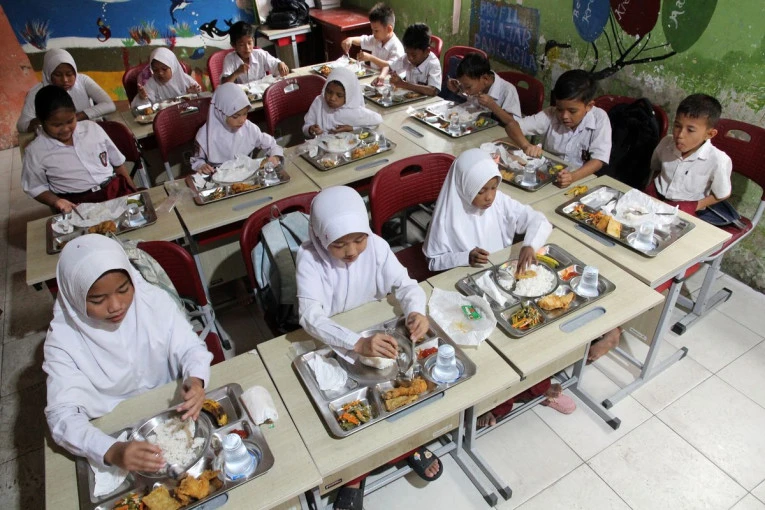
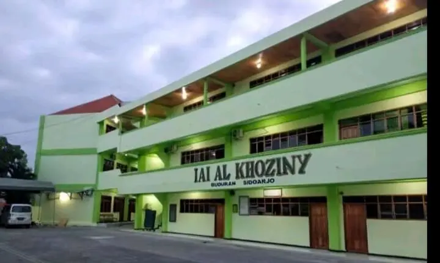
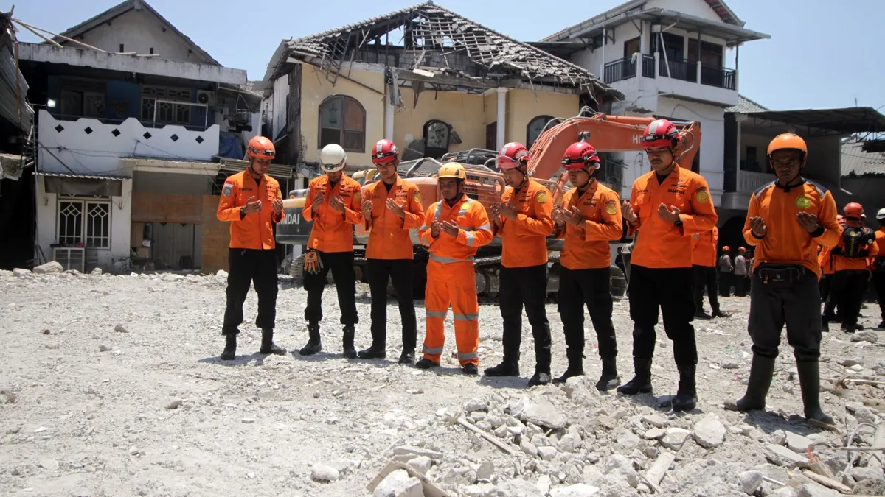
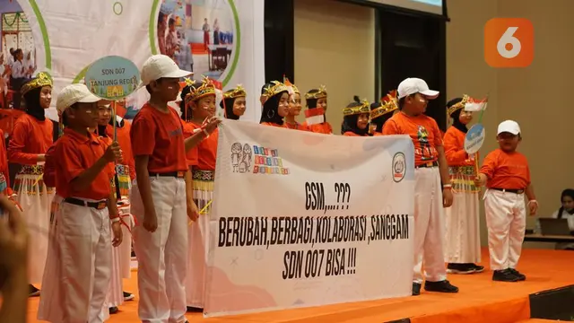
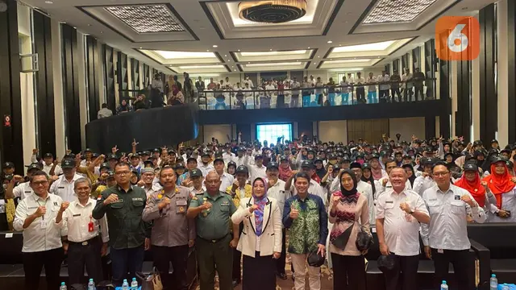
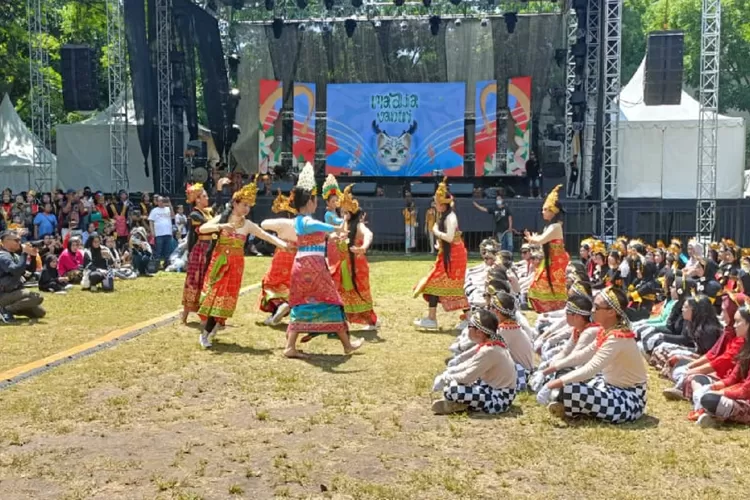
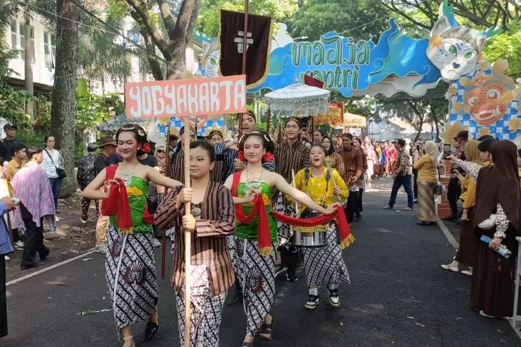
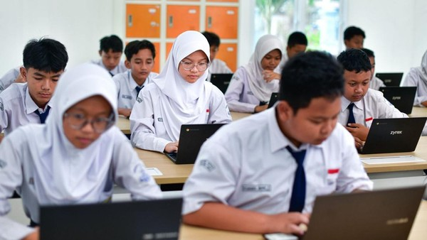
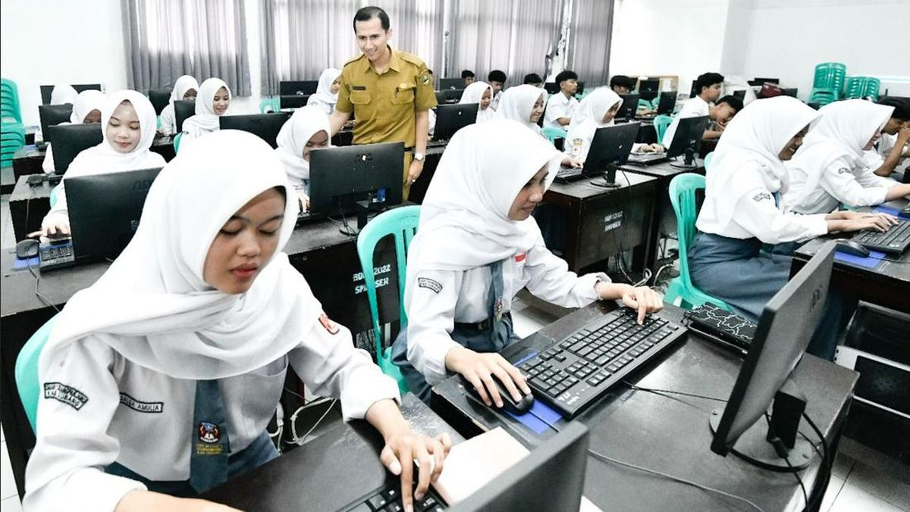

Akhir bulan September lalu, kasus keracunan usai menyantap hidangan makan bergizi gratis (MBG) terjadi di Kalimantan Barat. Ada tiga kasus keracunan MBG yang terhitung dalam sepekan itu. Ada 25 orang keracunan menu ikan hiu MBG di Ketapang, 5 siswa SD di Kayong Utara keracunan puding basi MBG, dan 6 siswa di Sanggau alami keracunan ayam basi MBG.

Diposting: 11 Oktober 2025
Gedung Pondok Pesantren Al Khoziny di Sidoarjo runtuh
Polisi mulai menyelidiki kasus ambruknya bangunan Pondok Pesantren Al Khoziny, Sidoarjo, dengan memeriksa 17 orang saksi. Polisi berjanji bersikap transparan selama proses penyelidikan. Hasil pemeriksaan sementara menunjukkan ada indikasi kuat adanya kelalaian dalam proses pembangunan dan pengawasan struktur bangunan.


Diposting: 10 Oktober 2025
Berau Coal Gandeng GSM Latih Ratusan Guru
Sebanyak 500 guru dan kepala sekolah dari 248 sekolah di Kabupaten Berau, Kalimantan Timur mengikuti Seminar Gerakan Sekolah Menyenangkan (GSM), di Hotel Bumi Segah, Rabu (30/8/2023). Dibuka oleh Bupati Berau Sri Juniarsih, kegiatan itu berlangsung selama dua hari dengan Kerjasama PT Berau Coal bersama Komunitas GSM. Tujuannya untuk meningkatkan kualitas pendidikan di Kabupaten Berau dan menginspirasi para guru untuk mengajar dengan pola yang menyenangkan.


Diposting: 10 Oktober 2025
Kegiatan yang Akan Berlangsung
Festival Budaya 2025: GHAWARNUSA
Festival Budaya SMAN 3 Bandung adalah acara tahunan yang merayakan dan melestarikan seni serta budaya Indonesia dengan tema yang berbeda setiap tahun, menampilkan seni tradisional dan modern, serta menampilkan pertunjukan, kuliner, dan interaksi dengan budayawan


Diposting: 6 Oktober 2025
Tes Potensi Akademik 2025
Tes Kemampuan Akademik (TKA) akan segera digelar. Tahun ini, siswa SMA/sederajat akan mengikutinya mulai 3 November 2025. Berdasarkan laporan Kementerian Pendidikan Dasar dan Menengah (Kemendikdasmen), ada lebih dari 3,5 juta siswa yang mendaftar TKA. Hasil TKA merupakan validator kompetensi dan capaian siswa. Nilai dan sertifikat TKA nantinya bisa digunakan untuk mendaftar ke jenjang berikutnya.


Diposting: 11 Oktober 2025
Serah Terima Jabatan OSIS dan PK SMA Negeri 3 Bandung
Sertijab adalah singkatan dari Serah Terima Jabatan, yaitu sebuah proses formal penyerahan tanggung jawab, wewenang, dan tugas dari pejabat lama kepada pejabat baru. Kegiatan ini merupakan bagian dari siklus pembinaan personel dan organisasi.